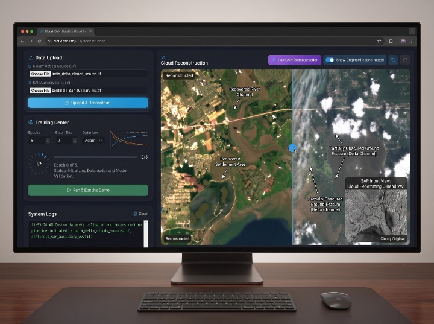
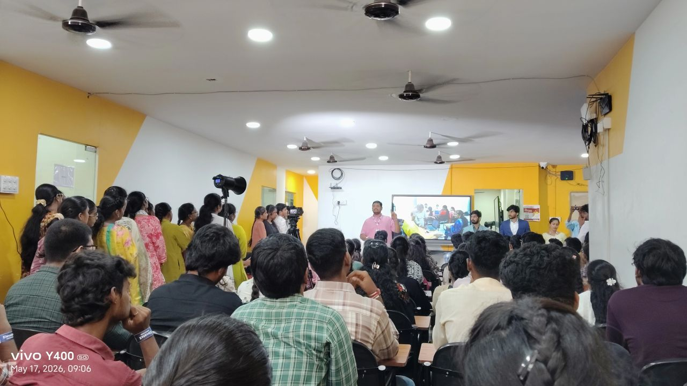

Technical Architectures &
Intelligent Systems
Exploring the boundaries of Generative AI, Computer Vision, and scalable Full-Stack engineering. Each project represents a synthesis of technical rigor and user-centric design.

Cloud Removal GAN
Developed a multi-stage Generative Adversarial Network designed to reconstruct satellite imagery obscured by atmospheric noise and cloud cover.
Challenge
Standard interpolation fails to recover structural textures beneath thick cirrus clouds, leading to data loss in environmental monitoring.
Build
Implemented using PyTorch with a custom U-Net discriminator and perceptual loss functions to ensure high-fidelity spatial consistency.
Nexus Academic Core
A mission-critical Full-Stack ERP designed for high-throughput academic data management, serving 5,000+ active concurrent users.
Modular Architecture
Microservices-driven backend ensuring high availability and fault tolerance during peak registration periods.
Role-Based Auth
Granular permissions with JWT-based security protocols for students, faculty, and administrative staff.
Hackathon: Design Thinking Sprint
A high-intensity 48-hour challenge focused on empathy-driven problem solving and rapid prototyping for urban mobility solutions.

01. Empathize
Conducted field interviews with 20+ commuters to identify friction points in multi-modal transit systems.
- • Pain point mapping
- • User personas
02. Ideate & Prototype
Iterated through 5 low-fidelity wireframe versions before landing on a unified transit dashboard.
- • Rapid Figma prototyping
- • Guerrilla testing
03. Impact
Winner of "Most User-Centric Design" award. Scaled the concept into a pitch-ready MVP for local city councils.
- • 1st Place Award
- • Venture-backed interest